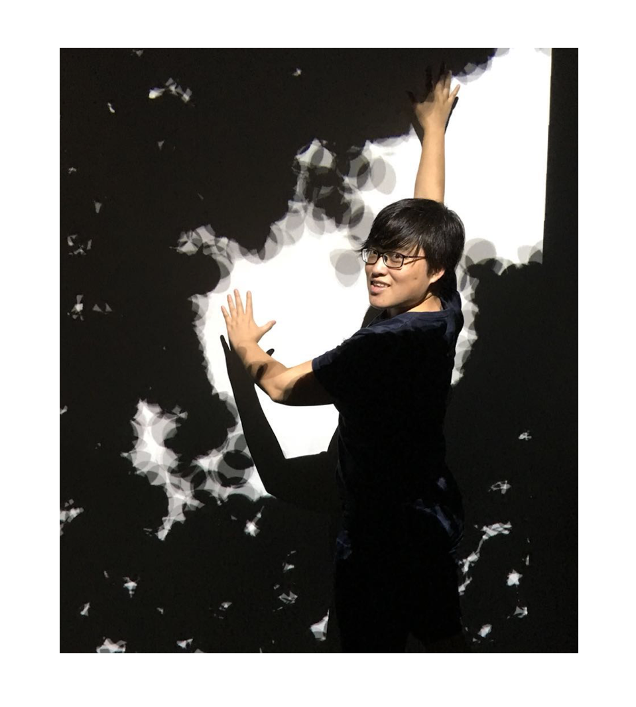

Biography
Mingfei is a Senior Applied Scientist at Apple working on multimodal foundation models, multimodal LLM and 3D scene understanding. Before that, she was a Senior Research Scientist at Salesforce Research, Palo Alto, USA. She received her PhD degree from the Computer Science Department at the University of Maryland College Park, advised by Prof. Larry S. Davis.
News
Publication
- 4M: Massively Multimodal Masked Modeling [ open review ][ project page ]
David Mizrahi*, Roman Bachmann*, Oğuzhan Fatih Kar, Teresa Yeo, Mingfei Gao, Afshin Dehghan, Amir Zamir
Conference on Neural Information Processing Systems (NeurIPS), 2023 (Spotlight). *Equal contribution. - ULIP: Learning Unified Representation of Language, Image and Point Cloud for 3D Understanding [ pdf ][ code ][ project page ]
Le Xue, Mingfei Gao, Chen Xing, Roberto Martín-Martín, Jiajun Wu, Caiming Xiong, Ran Xu, Juan Carlos Niebles, Silvio Savarese
IEEE Conference on Computer Vision and Pattern Recognition (CVPR), 2023. - Mask-free OVIS: Open-Vocabulary Instance Segmentation without Manual Mask Annotations [ pdf ][ code ][ project page ]
Vibashan VS, Ning Yu, Chen Xing, Can Qin, Mingfei Gao, Juan Carlos Niebles, Vishal M. Patel, Ran Xu
IEEE Conference on Computer Vision and Pattern Recognition (CVPR), 2023. - TAG: Boosting Text-VQA via Text-aware Visual Question-answer Generation [ pdf ][ code ]
Jun Wang, Mingfei Gao, Yuqian Hu, Ramprasaath R. Selvaraju, Chetan Ramaiah, Ran Xu, Joseph F. JaJa, Larry S. Davis
British Machine Vision Conference (BMVC), 2022. - Open Vocabulary Object Detection with Pseudo Bounding-Box Labels [ pdf ][ code ][ blog ]
Mingfei Gao*, Chen Xing*, Juan Carlos Niebles, Junnan Li, Ran Xu, Wenhao Liu, Caiming Xiong
European Conference on Computer Vision (ECCV), 2022. *Equal contribution. - Burn After Reading: Online Adaptation for Cross-domain Streaming Data [ pdf ][ code ]
Luyu Yang, Mingfei Gao, Zeyuan Chen, Ran Xu, Abhinav Shrivastava, Chetan Ramaiah
European Conference on Computer Vision (ECCV), 2022. - DocQueryNet: Value Retrieval with Arbitrary Queries for Form-like Documents [ pdf ][ code ]
Mingfei Gao*, Le Xue*, Chetan Ramaiah, Chen Xing, Ran Xu, Caiming Xiong
International Conference on Computational Linguistics (COLING), 2022. *Equal contribution. - Field Extraction from Forms with Unlabeled Data [ pdf ]
[ dataset ][ code ]
Mingfei Gao, Zeyuan Chen, Nikhil Naik, Kazuma Hashimoto, Caiming Xiong, Ran Xu
ACL Workshop on Spa-NLP, 2022. - Deep Co-Training with Task Decomposition for Semi-Supervised Domain Adaptation [ pdf ][ code ]
Luyu Yang, Yan Wang, Mingfei Gao, Abhinav Shrivastava, Kilian Q. Weinberger, Wei-Lun Chao, Ser-Nam Lim
International Conference on Computer Vision (ICCV), 2021. - WOAD: Weakly Supervised Online Action Detection in Untrimmed Videos [ pdf ][ code ]
Mingfei Gao, Yingbo Zhou, Ran Xu, Richard Socher, Caiming Xiong
IEEE Conference on Computer Vision and Pattern Recognition (CVPR), 2021. - Robustness Evaluation of Transformer-based Form Field Extractors via Form Attacks [ pdf ]
Le Xue*, Mingfei Gao*, Zeyuan Chen, Caiming Xiong, Ran Xu
International Conference on Document Analysis and Recognition (ICDAR), 2023 (Oral). *Equal contribution. - InfoFocus: 3D Object Detection for Autonomous Driving with Dynamic Information Modeling [ pdf ]
Jun Wang*, Shiyi Lan*, Mingfei Gao, Larry S. Davis
European Conference on Computer Vision (ECCV), 2020. *Equal contribution. - Consistency-based Semi-supervised Active Learning: Towards Minimizing Labeling Cost [ pdf ]
Mingfei Gao, Zizhao Zhang, Guo Yu, Sercan O. Arik, Larry S. Davis, Tomas Pfister
European Conference on Computer Vision (ECCV), 2020. - StartNet: Online Detection of Action Start in Untrimmed Videos [ pdf ]
Mingfei Gao, Mingze Xu, Larry S. Davis, Richard Socher, Caiming Xiong
International Conference on Computer Vision (ICCV), 2019. - Temporal Recurrent Networks for Online Action Detection [ pdf ][ code ]
Mingze Xu*, Mingfei Gao*, Yi-Ting Chen, Larry S. Davis, David J. Crandall
International Conference on Computer Vision (ICCV), 2019. *Equal contribution. - WSLLN: Weakly Supervised Natural Language Localization Networks [ pdf ]
Mingfei Gao, Larry S. Davis, Richard Socher, Caiming Xiong
Empirical Methods in Natural Language Processing (EMNLP) short, 2019. - Goal-oriented Object Importance Estimation in On-road Driving Videos[ pdf ]
Mingfei Gao, Ashish Tawari, Sujitha Martin
IEEE International Conference on Robotics and Automation (ICRA), 2019. - C-WSL: Count-guided Weakly Supervised Localization [ pdf ]
Mingfei Gao, Ang Li, Ruichi Yu, Vlad I. Morariu, Larry S. Davis
European Conference on Computer Vision (ECCV), 2018. - Dynamic Zoom-in Network for Fast Object Detection in Large Images [ pdf ]
Mingfei Gao, Ruichi Yu, Ang Li, Vlad I. Morariu, Larry S. Davis
IEEE Conference on Computer Vision and Pattern Recognition (CVPR), 2018. - NISP: Pruning Networks using Neuron Importance Score Propagation [ pdf ]
Ruichi Yu, Ang Li, Chun-Fu Chen, Jui-Hsin Lai, Vlad I. Morariu, Xintong Han, Mingfei Gao, Ching-Yung Lin, Larry S. Davis
IEEE Conference on Computer Vision and Pattern Recognition (CVPR), 2018. - Learning discriminative occlusion feature for depth ordering inference on monocular image
Anlong Ming, Baofeng Xun, Jia Ni, Mingfei Gao, Yu Zhou
IEEE International Conference on Image Processing (ICIP), 2015.
Past Experience
- Research Scientist, Salesforce Research, Palo Alto, CA (Feb. 2020 - May. 2022)
- Student Researcher, Google AI Research, Sunnyvale, CA (Aug. 2019 - Oct. 2019)
- Research Intern, Google AI Research, Sunnyvale, CA (May. 2019 - Aug. 2019)
- Research Intern, Salesforce Research, Palo Alto, CA (Jan. 2019 - May. 2019)
- Research Intern, Honda Research Institute, Mountain View, CA (May. 2018 - Aug. 2018)
- Research Assistant, University of Maryland, College Park, MD (May. 2016 - Nov. 2019)
- Teaching Assistant, University of Maryland, College Park, MD (Aug. 2015 - May. 2016)
Professional Service
- Conference Reviewer:
- IEEE Conference on Computer Vision and Pattern Recognition (CVPR)
- IEEE International Conference on Computer Vision (ICCV)
- European Conference on Computer Vision (ECCV)
- Neural Information Processing System (NeurIPS)
- International Conference on Learning Representations (ICLR)
- International Conference on Machine Learning (ICML)
- Conference on Empirical Methods in Natural Language Processing (EMNLP)
- Transactions on Pattern Analysis and Machine Intelligence (TPAMI)